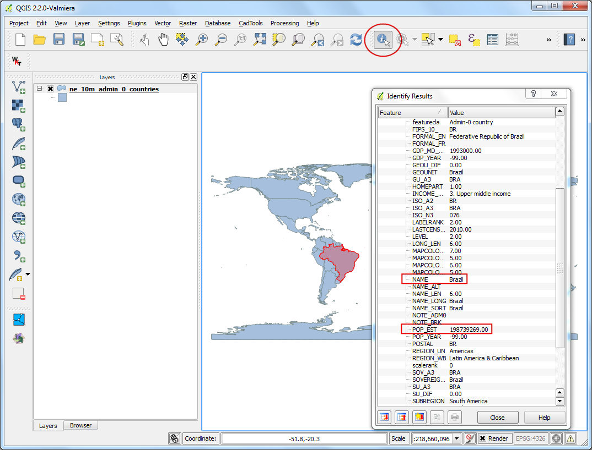
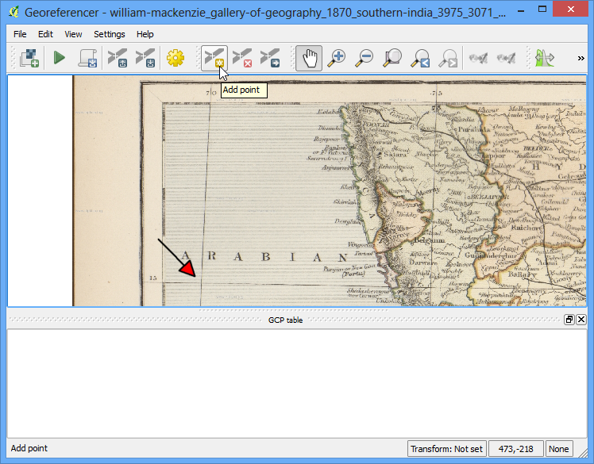
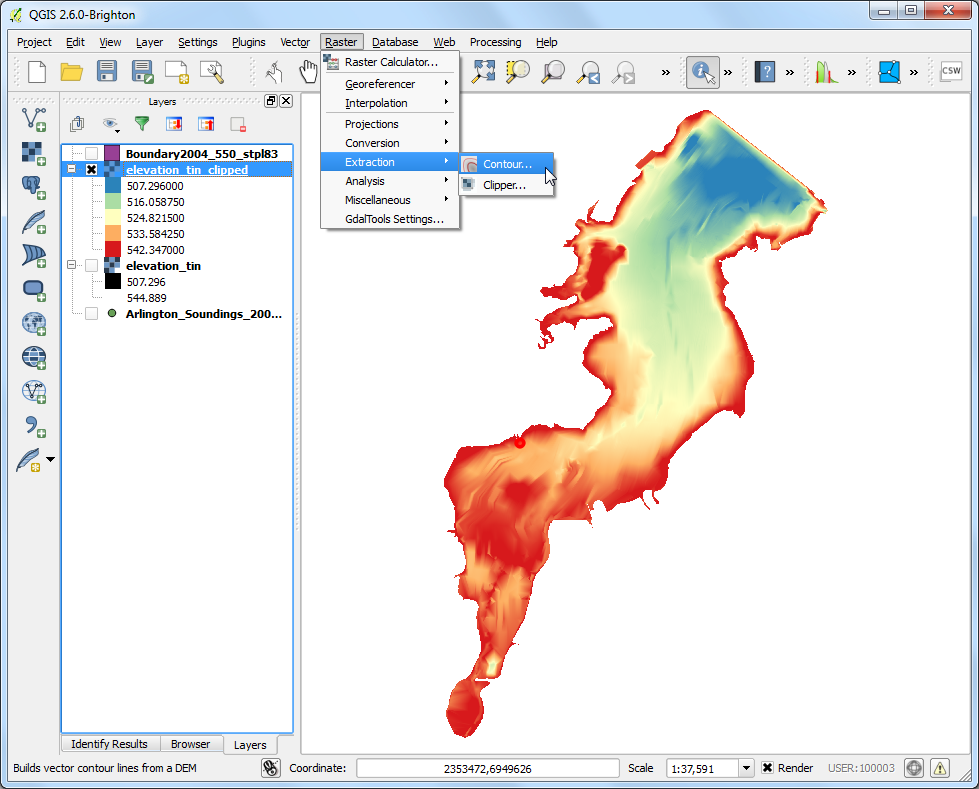

Suchen und Laden von OpenStreetMap Daten
[ Download PDF A4 Letter ]
Hochqualitative Daten sind für jede GIS-Aufgabe unerlässlich. Eine großartige Quelle für freie und offen lizenzierte Daten ist OpenStreetMap(OSM) . Die OSM Datenbank besteht aus Straßen, lokale Daten wie auch Gebäude-Polygone. Einen Zugang zu OSM-Daten in einem GIS-Format ist in QGIS integriert. Diese Anleitung erläutert den Prozess, OSM-Daten in QGIS zu suchen, herunterzuladen und zu verwenden.
Übersicht der Aufgabe
Suche nach London in der OSM-Datenbank. Browsen in den Daten. Auswahl eines Teils der Stadt und Extrahieren aller öffentlichen Orte als Shapedatei.
Arbeitsablauf
Wir werden 2 Plug-ins verwenden, um die Aufgabe zu erledigen. Stellen Sie sicher, dass Sie die OSM Place Search and OpenLayers Plug-ins installiert haben. Siehe dazu Verwenden von Erweiterungen als Anleitung.

Die OSM Place Search Erweiterung installiert sich als eigenes Panel in QGIS. Sie sehen einen neuen Bedienbereich OSM place search....

Das OpenLayers Plug-in wird im Web Menü installiert (neu in QGIS 2.8). Es erlaubt den Zugriff in QGIS auf Basiskarten verschiedener Anbieter. Lassen Sie uns die OpenStreetMap Basiskarte über laden.

Sie sollten jetzt eine Weltkarte in QGIS sehen.
Bemerkung
Sollte Sie nichts sehen, stellen Sie sicher, dass Sie online sind, wenn die Kacheln der Basiskarte geladen werden. Sie können auch das Karte verschieben Werkzeug benutzen, um die Karte leicht zu verschieben. Dadurch wird die Karte aktualisiert.

Suchen wir jetzt nach London. Geben Sie Ihre Suche in das Feld Name contains... im OSM Place Search Bereich ein. Sie können mit dem Mauszeiger über die Ergebnisse fahren und der zugehörige Ort wird auf der Karte hervorgehoben. Wählen Sie den ersten Treffer -welcher die Stadt London in Großbritannien ist- und klicken Sie Zoom.

Der Basislayer wird zur Stadt London verschoben und zentriert. Sie können das Hineinzoomen Werkzeug benutzen und einen Bereich Ihres Interesses wählen. Für dieses Tutorial können Sie -wie hier gezeigt- auf das Zentrum der Stadt vergrössern.

Jetzt können wir die angezeigten Inhalte des Kartenrahmens herunterladen. Gehen Sie zu .

Im Dialog OpenStreetMap-Daten herunterladen verwenden Sie Ausmaße des Kartenanzeige. Wählen Sie einen Pfad und Namen der Ausgabedatei als london.osm.

Die Datei mit der .osm Endung eine Textdatei im OSM XML Format. Wir müssen diese zuerst in ein geeignetes Format konvertieren, um es einfach in QGIS verarbeiten zu können. Gehen Sie zu .
Bemerkung
Da wir die OSM Place Search Funktion nicht mehr benötigen, können Sie den Schließen-Button klicken, um den Bereich aus dem Fenster zu entfernen. Falls Sie diese erneut benötigen, können Sie sie über (Windows) or (Linux) aktivieren.

Wählen Sie die heruntergeladene Datei london.osm als Import-XML-Datei (.osm). Bennen Sie die Spatialite-DB-Ausgabedatei als london.osm.db. Stellen Sie sicher, dass (SpatiaLite-)Verbindung nach Import erzeugen aktiviert ist.

Nun der letzte Schritt. Wir müssen einen SpatiaLite Geometrie Layer erzeugen, der in QGIS angezeigt und analysiert werden kann. Dies wird mit .

Die london.osm.db Datei enthält alle Feature-Typen in der OSM-Datenbank - Punkte, Linien und Polygone. GIS Layer enthalten typischer Weise nur einen Typus von Feature, so dass Sie einen wählen müssen. Da wir an den Punkt-Örtlichkeiten von Pubs interessiert sind, müssen Sie hier Punkte (Knoten) als Exporttyp verwenden. Wollten Sie das Straßennetz wäre der Typ Polylinien (offene Wege). Benennen Sie den Ausgabelayername als london_points. GIS-Daten haben 2 Teile - Positionen und Attribute. Wir möchten neben der Position also auch den Namen der Pubs und müssen daher diese Information ebenfalls exportieren. Klicken Sie auf Aus Datenbank laden im Bereich Exportierte Tags. Damit werden alle Attribute der london.osm.db geholt. Aktivieren Sie name und amenity. Um mehr über die OSM-Attribute und deren Bedeutung zu erfahren, siehe OSM Tags. Stellen Sie sicher, dass Nach Abschluss zur Karte hinzufügen aktiv ist und klicken dann OK.

Sie sehen einen neuen Punkt-Layer mit Namen london_points. Beachten Sie, dass ALLE Punkte von OSM in der Ansicht enthalten sind. Da wir nur die Pubs möchten, müssen wir eine Abfrage formulieren, die nur diese auswählt. Machen Sie einen Rechtsklick auf london_points und dann Attributtabelle öffnen.

Sie können erkennen, dass in der Spalte amenity manche Features den Attributwert pubs haben. Klicken Sie auf Objekte mit einem Ausdruck wählen.

Geben Sie den Ausdruck “amenity” = ‘pub’ and klicken Sie Auswahl.

Zurück im Kartenfenster, können Sie einzelne hervorgehobene gelbe Punkte erkennen. Diese sind das Ergebnis unseres Ausdrucks. Machen Sie einen Rechtsklick auf london_points und nutzen Speichern als....

Im Folgedialog Vektorlayer speichern als... wird der Pfad zur Ausgabedatei london_pubs.shp definiert und der Haken bei Nur gewählte Objekte speichern sowie Gespeicherte Datei zur Karte hinzufügen gesetzt. Klicke OK.

Jetzt sehen wir einen neuen Layer london_pubs im QGIS-Fenster. Deaktivieren Sie london_points, da wie sei nicht mehr brauchen.

Das Extrahieren der Pubs als Shapedatei ist damit abgeschlossen. Mit dem Objekte abfragen Tool könne Sie auf jeden der Punkte klicken und dessen Attribute sehen.